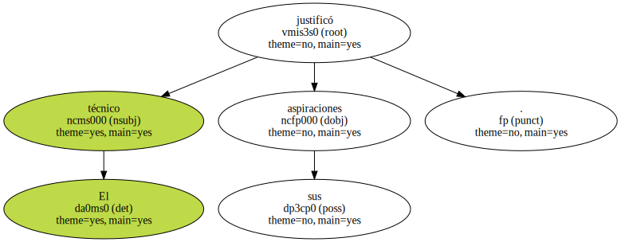
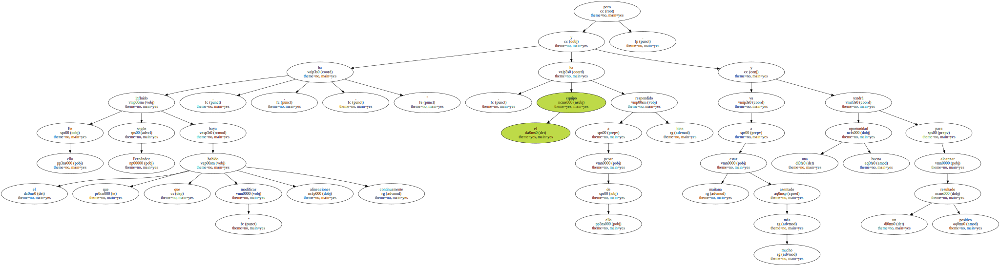
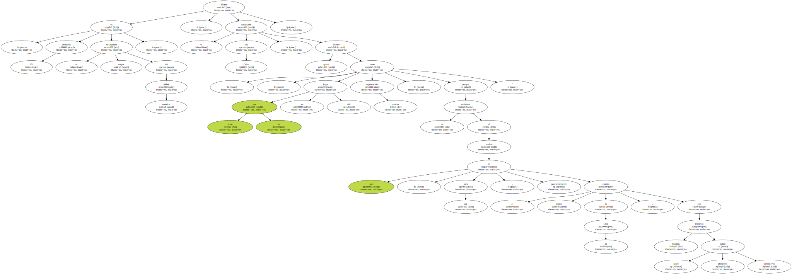
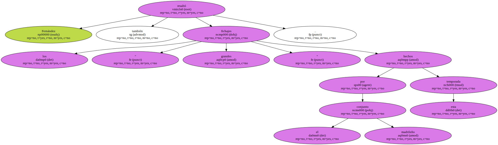
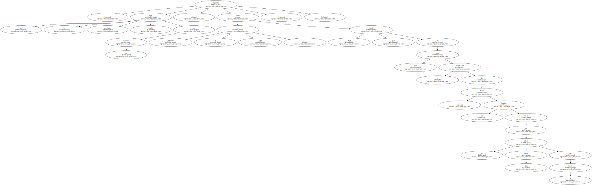
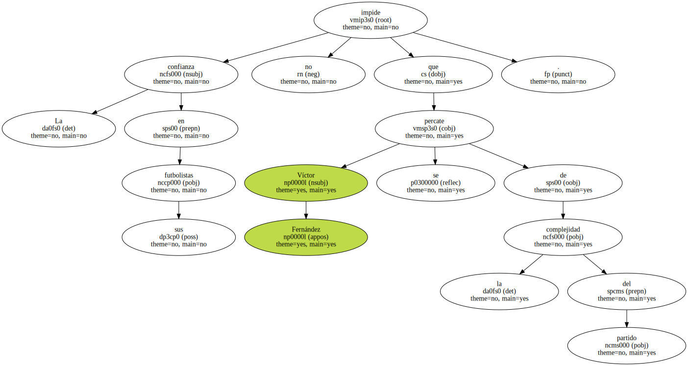
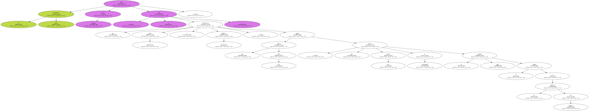
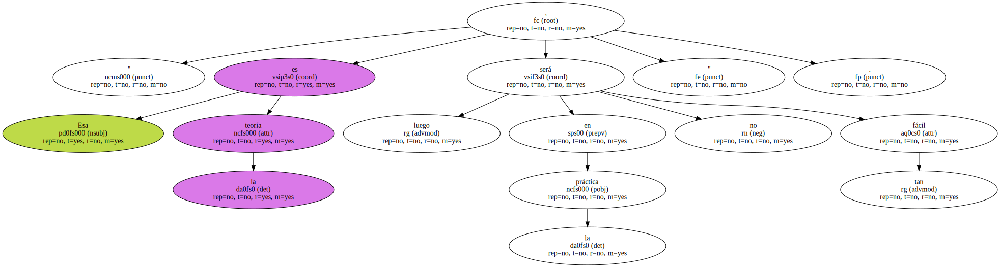

El entrenador del Celta , Víctor Fernández , ha manifestado hoy a EFE que su equipo " no renuncia a nada " en el enfrentamiento de Liga del domingo ante el Real Madrid en el Santiago Bernabéu.

El técnico justificó sus aspiraciones.
" Hemos realizado unos últimos partidos más que notables aunque los resultados no hayan sido los deseados " , afirmó , y añadió que " el equipo ha tenido momentos francamente brillantes , pero no ha enganchado un resultado que nos diera más confianza ".

En ello ha influido , según Fernández , el que haya habido que " modificar alineaciones continuamente , pero a pesar de ello , el equipo ha respondido bien y mañana va a estar mucho más asentado y tendrá una buena oportunidad para alcanzar un resultado positivo ".
" El Bernabéu es el mejor escaparate del fútbol mundial " , afirmó el entrenador del Celta , quien añadió : " todo lo que se haga allí tiene mucha repercusión , porque te enfrentas al equipo que , para mí , es potencialmente el mejor equipo de la Liga , con muchos recursos tanto ofensivos como defensivos ".
Fernández resaltó también los " grandes fichajes " hechos por el conjunto madrileño esta temporada.
" Jugadores que les están aportando mucho en su dinámica , como Makelele o Figo , y otro gran fichaje que ha sido la recuperación de Hierro , un hombre vital en la salida desde atrás con el balón ".
La confianza en sus futbolistas no impide que Víctor Fernández se percate de la complejidad del partido.
" Será peligroso y complicado , pero al mismo tiempo es ilusionante y creo que se verá un buen encuentro , con dos equipos en pos de la victoria ".

El entrenador céltico tiene como ejemplo " la idea que transmitieron el Boca o el Mallorca , equipos que jugaron muy juntos , que salieron muy rápido al contraataque tratando de coger la espalda a los laterales del Madrid ".
" Esa es la teoría , luego en la práctica no será tan fácil ".
